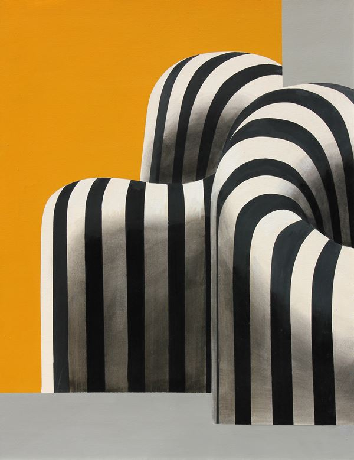
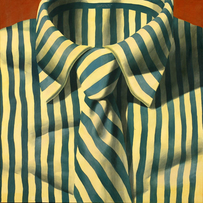
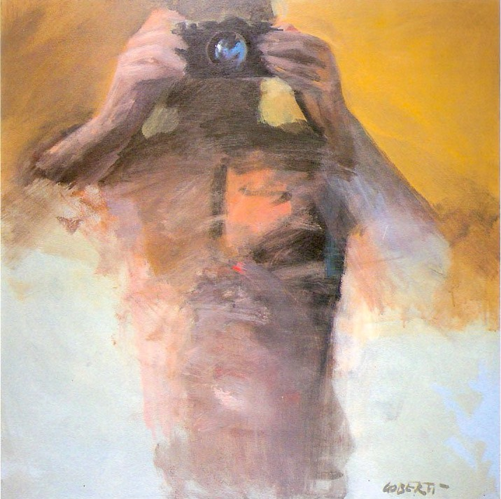
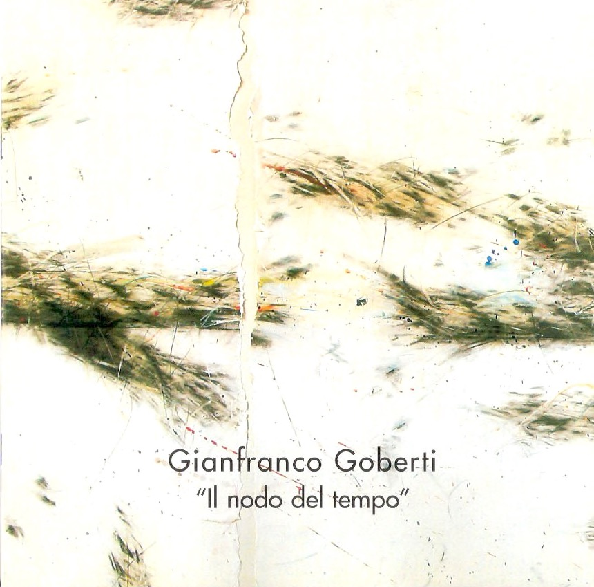

RIGUARDO LA COLLEZIONE
GUARDA
Video della mostra Incontri d'Autore - Gianfranco Goberti a Galleria del Carbone, febbraio 2011.



BIOGRAFIA E MOSTRE

VIA ALLA BIOGRAFIA
Gianfranco Goberti è stato un artista contemporaneo, attivo a partire dagli anni Sessanta soprattutto Ferrara.

SCOPRI LE MOSTRE
Ha esposto in varie mostre a livello nazionale e internazionale, tra le più importanti: IX Quadriennale d'Arte (Roma, 1965), Feria Internacional de Muestras (Bilbao, 1982), Galleria Bonino (New York, 1987), ArteExpo (Barcellona, 1997), Artissima (Torino, 2000), LineArt (Gand, 2003), 54º Biennale di Venezia (2011).